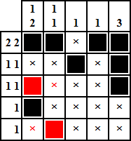
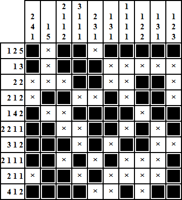
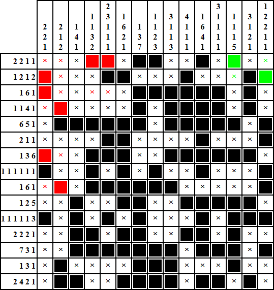
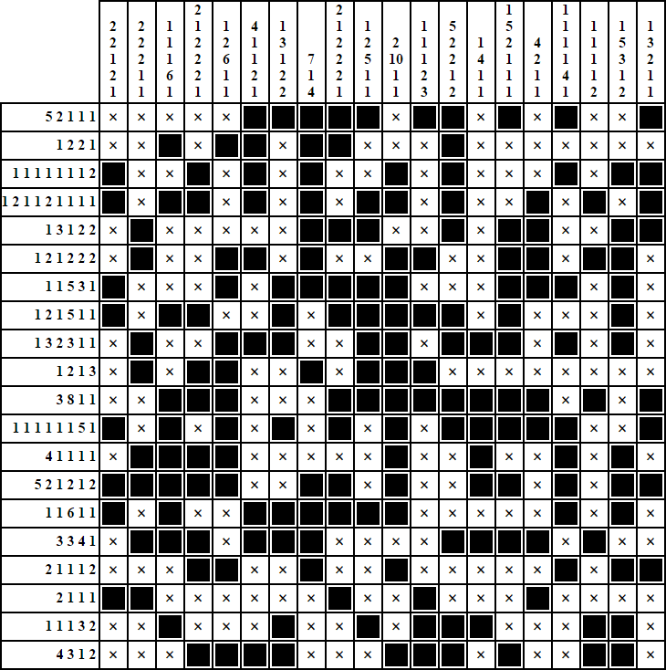

These are some terms you'll need to know in order to be able to understand how to play. The table cells with numbers in them are the labels for their respective row or column. Those numbers are in a specific order and are important in solving the puzzle. A space is one of the cells that are not labels, and it can either be filled or empty. A series of filled spaces is a block. It is important to know that each block must have at least one empty space between it and another block. The numbers in the labels correspond to the length of each block in that label's row or column. The goal of the game is determining for every space whether it is filled or empty. It is important to know that there may be multiple solutions to a puzzle, and that some puzzles may require guessing later during solving. Many spaces can be determined to be filled or empty based on logic. When all other methods using logic are exhausted, make a guess whether a space is filled or empty (this should be a last resort). Also, you should use a different color when making a guess. If you run into a contradiction, your initial guess (filled or empty) must be wrong, and therefore guaranteed to be the opposite (empty or filled, respectively). For some logical techniques used for solving a nonogram, please read this Wikipedia article. Here are some solutions to nonograms of various sizes:
   